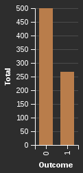

Scala the cozy way
In my last post, I explored portfolio optimization techniques using Monte Carlo simulation and the drawbacks of using Python for computationally expensive tasks. While there are options to help speed things up like ‘cython’, ‘pypy’ ‘numba’,’ joblib’…etc - Python’s interpreter prevents threads from sharing code, thus making multi-threaded applications impossible. A workaround is to use multiprocessing at the cost of huge memory consumption.
I want to explore computational tasks in a language known for concurrency and parallelism - Scala. Scala tries to bridge the world of object-oriented programming (Java) and functional programming (think R) and shares many characteristics with Java including tight integration with JVM, the ability to leverage Java libraries, and statically typed and immutable variables. These features are an attractive option because Scala models are easily deployed into production and can even leverage existing Java code.
In the example below, I show how to develop a predictive model on the well known Pima Indians Diabetes dataset using Scala, Spark - a distributed data analysis ecosystem for managing matrix manipulations and Vega-Viz, the self-proclaimed ‘matplotlib of Scala’.
Reading Data
Spark offers several data types for matrix manipulation including RDD (Resilient Distributed Dataset), DataFrames, and Datasets. Each datatype offers a unique API and level of abstraction. If you’ve worked with Pandas then the DataFrame API should feel somewhat familiar.
val DF = spark.read
.format("org.apache.spark.csv")
.option("header","true")
.schema(schema)
.csv("data//diabetes.csv")
.show
+-----------+-------+-------------+-------------+-------+----+------------------------+----+-------+----+
|Pregnancies|Glucose|BloodPressure|SkinThickness|Insulin| BMI|DiabetesPedigreeFunction| Age|Outcome| Rec|
+-----------+-------+-------------+-------------+-------+----+------------------------+----+-------+----+
| 6.0| 148.0| 72.0| 35.0| 0.0|33.6| 0.627|50.0| 1.0|null|
| 1.0| 85.0| 66.0| 29.0| 0.0|26.6| 0.351|31.0| 0.0|null|
| 8.0| 183.0| 64.0| 0.0| 0.0|23.3| 0.672|32.0| 1.0|null|
| 1.0| 89.0| 66.0| 23.0| 94.0|28.1| 0.167|21.0| 0.0|null|
| 0.0| 137.0| 40.0| 35.0| 168.0|43.1| 2.288|33.0| 1.0|null|
| 5.0| 116.0| 74.0| 0.0| 0.0|25.6| 0.201|30.0| 0.0|null|
| 3.0| 78.0| 50.0| 32.0| 88.0|31.0| 0.248|26.0| 1.0|null|
| 10.0| 115.0| 0.0| 0.0| 0.0|35.3| 0.134|29.0| 0.0|null|
| 2.0| 197.0| 70.0| 45.0| 543.0|30.5| 0.158|53.0| 1.0|null|
| 8.0| 125.0| 96.0| 0.0| 0.0| 0.0| 0.232|54.0| 1.0|null|
| 4.0| 110.0| 92.0| 0.0| 0.0|37.6| 0.191|30.0| 0.0|null|
| 10.0| 168.0| 74.0| 0.0| 0.0|38.0| 0.537|34.0| 1.0|null|
| 10.0| 139.0| 80.0| 0.0| 0.0|27.1| 1.441|57.0| 0.0|null|
| 1.0| 189.0| 60.0| 23.0| 846.0|30.1| 0.398|59.0| 1.0|null|
| 5.0| 166.0| 72.0| 19.0| 175.0|25.8| 0.587|51.0| 1.0|null|
| 7.0| 100.0| 0.0| 0.0| 0.0|30.0| 0.484|32.0| 1.0|null|
| 0.0| 118.0| 84.0| 47.0| 230.0|45.8| 0.551|31.0| 1.0|null|
| 7.0| 107.0| 74.0| 0.0| 0.0|29.6| 0.254|31.0| 1.0|null|
| 1.0| 103.0| 30.0| 38.0| 83.0|43.3| 0.183|33.0| 0.0|null|
| 1.0| 115.0| 70.0| 30.0| 96.0|34.6| 0.529|32.0| 1.0|null|
+-----------+-------+-------------+-------------+-------+----+------------------------+----+-------+----+
only showing top 20 rows
Exploratory Data Analysis
Now, I want to generate some quick descriptive statistics of the features for each outcome. The dataset contains far more observations of negative outcomes vs positive outcomes.
val plot = Vegas("Diabetes Target Variable").
withDataFrame(DF_plot).
mark(Bar).
encodeY("Total",Quant).
encodeX("Outcome",Nom).
show

positives.describe("Age","Glucose","Insulin","BMI","Pregnancies","BloodPressure").show()
+-------+------------------+------------------+------------------+-----------------+------------------+------------------+
|summary| Age| Glucose| Insulin| BMI| Pregnancies| BloodPressure|
+-------+------------------+------------------+------------------+-----------------+------------------+------------------+
| count| 268| 268| 268| 268| 268| 268|
| mean| 37.06716417910448|141.25746268656715|100.33582089552239|35.14253731343278| 4.865671641791045| 70.82462686567165|
| stddev|10.968253652367915| 31.9396220580072|138.68912473153492|7.262967242346374|3.7412390440415546|21.491811650604124|
| min| 21.0| 0.0| 0.0| 0.0| 0.0| 0.0|
| max| 70.0| 199.0| 846.0| 67.1| 17.0| 114.0|
+-------+------------------+------------------+------------------+-----------------+------------------+------------------+
negatives.describe("Age","Glucose","Insulin","BMI","Pregnancies","BloodPressure").show()
+-------+------------------+------------------+-----------------+-----------------+-----------------+------------------+
|summary| Age| Glucose| Insulin| BMI| Pregnancies| BloodPressure|
+-------+------------------+------------------+-----------------+-----------------+-----------------+------------------+
| count| 500| 500| 500| 500| 500| 500|
| mean| 31.19| 109.98| 68.792|30.30419999999996| 3.298| 68.184|
| stddev|11.667654791631154|26.141199755353615|98.86528929231785|7.689855011650116|3.017184582621889|18.063075413305825|
| min| 21.0| 0.0| 0.0| 0.0| 0.0| 0.0|
| max| 81.0| 197.0| 744.0| 57.3| 13.0| 122.0|
+-------+------------------+------------------+-----------------+-----------------+-----------------+------------------+
We can see that patients with diabetes (positive outcome) have a higher average BMI, insulin level, and blood pressure.
Next, I ran PCA on the features and plot them onto their new subspace to get an idea of the underlying structure of the entire dataset:
val pca = new PCA()
.setInputCol("features")
.setOutputCol("pcaFeatures")
.setK(2)
.fit(rawDF)
val pcaPlot = Vegas("PCA Analysis: Diabetes Dataset")
.withDataFrame(pcaDF)
.mark(Circle)
.encodeX("Dim1",Quant)
.encodeY("Dim2",Quant)
.encodeColor(field="Outcome",dataType=Nom)
.show
pca.explainedVariance
[0.8885466345756245,0.06159078374587609]
These two components make up ~95% of the total variance in the dataset. Unfortunately, the PCA API does not have the ability to extract feature importance (which is pretty easy to do in python + sklearn).
Building a Predictive Model
With a good idea of the features, its time to build a predictive model and see if a higher BMI, Age, and Insulin level are good predictors of diabetes. Since this is a very straightforward binary classification problem, I will use a simple logistic regression model. Building the model is very straightforward:
val Array(trainDF,testDF) = rawDF_.randomSplit(Array(0.7,0.3), seed = 420)
val lr= new LogisticRegression()
.setMaxIter(100)
.fit(trainDF)
Next, I want to get the best performing threshold for classification:
val fMeasure = binarySummary.fMeasureByThreshold
val maxFMeasure = fMeasure.select(max("F-Measure")).head().getDouble(0)
val bestThreshold = fMeasure.where($"F-Measure" === maxFMeasure)
.select("threshold").head().getDouble(0)
lrModel.setThreshold(bestThreshold)
bestThreshold = 0.35802927540261664
Now, lets see how well this model performs:
val binarySummary = lrModel.summary.asInstanceOf[BinaryLogisticRegressionSummary]
println(s"areaUnderROC: ${binarySummary.areaUnderROC}")
areaUnderROC: 0.8275912622782583
Hyperparameter Tuning
I want to find optimal hyperparameters to improve model performance. Similar to SciKit-Learn, MLlib offers an interface to perform a grid search across a range of parameters in pure Scala.
val paramGrid = new ParamGridBuilder()
.addGrid(lr.regParam,Array(0.1,0.01,0.001))
.addGrid(lr.elasticNetParam,Array(0.1,0.5,1))
.build()
val cv = new CrossValidator()
.setEstimator(lr)
.setEvaluator(new BinaryClassificationEvaluator)
.setEstimatorParamMaps(paramGrid)
.setNumFolds(5)
.setParallelism(5)
val cvModel = cv.fit(trainDF)
val best_params = cvModel.getEstimatorParamMaps
.zip(cvModel.avgMetrics)
.maxBy(_._2)
._1
best_params =
{
logreg_7d97dd1bfd21-elasticNetParam: 0.1,
logreg_7d97dd1bfd21-regParam: 0.01
}
Testing on New Data
I’m going to test the optimized model on new data. I’m expecting some increase in performance vs manual tuning.
val test_preds = best_cv_model.transform(testDF)
val evaluator = new BinaryClassificationEvaluator().setLabelCol("label")
val test_accuracy = evaluator.evaluate(test_preds)
test_accuracy = 0.8651573013275138
Interpreting Results
I want to validate my assumptions: higher BMI, insulin and glucose levels are the best indicators of diabetes. In a linear regression model, feature coefficients are a good way to gauge how each feature affects the outcome.
Pregnancies: [0.3869676859844127]
Glucose: [1.1749641871879253]
Blood Pressure: [-0.08255553530505502]
Skin Thickness: [-0.023464852886107206]
Insulin: [-0.12799630268133838]
BMI: [0.4887016842463964]
DiabetesPedigreeFunction: [0.20436839456131053]
Age: [0.06883927494000472]
So, based on this linear regression model, the most influential indicators of diabetes is Glucose level and BMI.